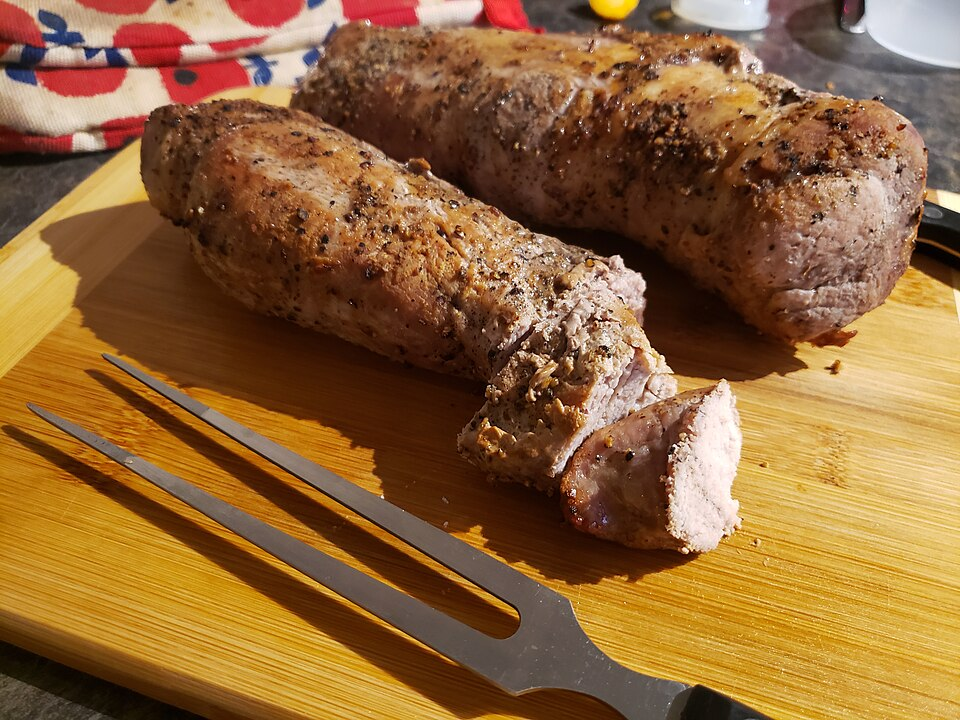

Dinner, Lunch, Protein, Prep, By Claude
2 pork tenderloins (about 2 1/2 lb total), silver skin trimmed
2 lb sweet potatoes, cut in 1-inch cubes
2 crisp apples (Honeycrisp or Pink Lady), cut in 8 wedges each
1 red onion, cut in wedges
2 tablespoons olive oil, divided
1 1/2 teaspoons kosher salt, divided
1/2 teaspoon black pepper
Dijon-maple glaze
3 tablespoons Dijon mustard (half whole-grain is nice)
2 tablespoons pure maple syrup
1 tablespoon apple cider vinegar
3 garlic cloves, minced
2 teaspoons fresh thyme leaves (or 1 tsp dried)
Two tenderloins and the side dish on one sheet pan. Pork tenderloin is about as lean as chicken breast and cheaper per pound, and the sweet potatoes give you carbs for running.
Heat the oven to 425°F. Toss the sweet potatoes and onion with 1 tablespoon oil and 1/2 teaspoon salt on a large sheet pan. Roast 15 minutes.
Meanwhile, pat the pork dry and season all over with the remaining salt and the pepper. Whisk the glaze ingredients together.
Optional but recommended: sear the tenderloins in the remaining oil in a large oven-safe skillet, 2 minutes per side, until browned.
Push the potatoes to the edges, add the apples, and set the pork in the middle. Brush the pork with half the glaze.
Roast 18–22 minutes, brushing on the rest of the glaze halfway through, until the thickest part reads 145°F.
Rest the pork 10 minutes before slicing. Spoon the pan juices over the pork and vegetables.
Divide into 6 containers. Keeps 4 days. Leftover slices are good cold, or chopped into rice bowls or tacos.
Pork is safe and juiciest at 145°F with a slight blush in the center. Cooking past 155°F dries out tenderloin quickly.
~440 CALORIES
40G PROTEIN
10G FAT
45G CARBS
6G FIBER
Photo: Pork Tenderloin on cutting board.jpg by Taylorderek, CC BY 4.0, via Wikimedia Commons. Representative image, not this exact recipe.